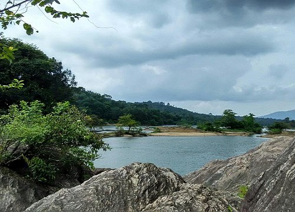

TOP ATTRACTIONS IN ERANAKULAM
EDAPPALLY CHURCH

Edappally, about 10 km away from the city, is famous for the St. George Forane Church, one of the oldest Roman Catholic Churches in the State. The church, popularly known as Edappally Pally, was a small structure at the time of its construction in 594 AD. In 1080 AD, a bigger church was built adjacent to the old one to accommodate the congregation that had grown greatly in number. The Edappally pilgrim church was the richest Catholic shrine in Kerala. Due to the uncountable miracles of Edappally St George, the Catholic Church
BOOTHATHANKETTU DAM
Bhoothathankettu is among the most picturesque dams in Kerala. It is said the natural fortification of hills and forests that guard the place were built by bhoothams (spirits/ghosts). Located in Ernakulam district, it contains some of the best trekking trails in the State. Trekking through the forests here is an exhilarating experience. A boat ride here is a beautiful way to explore the natural beauty on display. Located nearby is the legendary Salim Ali Bird Sanctuary at Thattekkad.The two main irrigation projects of Ernakulam district - the Periyar Valley Irrigation Project and the Idamalayar are also located nearby
PUTHUVYPE BEACH

Puthuvype (Puthu vype - New Vypin) is an upcoming major Industrial area in Kochi in the Indian state of Kerala. It is situated 5 km west of High Court Junction.Puthuvype is a part of Vypin Island. It borders Vembanad Lake to the East, Arabian Sea to the West and South and Njarakkal to the North. The main thoroughfares in the area are Vypin-Munambam Road and LNG Terminal Road. It is one of the important place in Vypin Island. Puthuvype is well known for Puthuvype Light house beach.One of the less visited but yet very beautiful beach is the Puthuvype beach.